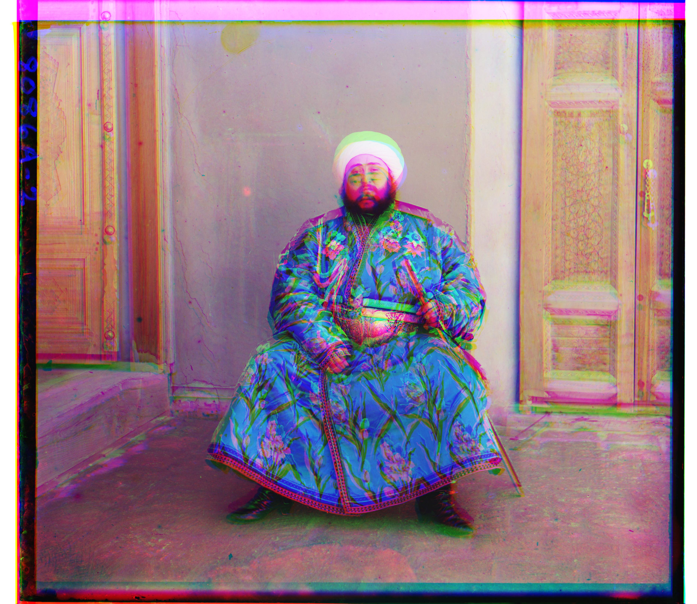
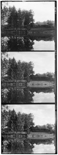

Overview
In 1907, Sergei Mikhailovich Prokudin-Gorskii became a strong believer in the potential of color photography. With the approval of the Tsar, he embarked on a journey across the Russian Empire, capturing color photographs of the scenes he encountered. At the time, the concept of color photography was still in its infancy. To produce color images, he took three separate exposures of each scene on glass plates, using red, green, and blue filters. Though Prokudin-Gorskii’s vision wasn’t fully realized during his lifetime, his RGB glass plate negatives endured, and the Library of Congress later brought his images to life through colorization.
This project is to transform the digitized glass plate images into a color image with minimal visual artifacts. The task involves accurately aligning the R, G, and B channels using Sobel features to create a composite color image. Additionally, the process includes automatically cropping the image using a threshold-based method and enhancing contrast through histogram equalization. These steps ensure a well-aligned, visually enhanced final image with reduced unwanted borders and improved contrast across the entire image. This project uses python to accomplish this assignment. An illustration of this process shows the original glass plate images on the left and the final colorized result on the right.
Approach
Method 1: Displacement
One straightforward approach for aligning images involves displacing the image and calculating the distance (using metrics like Euclidean Distance or Normalized Cross-Correlation) between the target image and the displaced image. However, this method is time-consuming for high-resolution images. In this method, I used a displacement range of [-15, 15] pixels. The outcome of this approach is shown on the left.
Method 2: Image Pyramid
An alternative method utilizes an image pyramid, where each layer is scaled by a factor of 2 from the previous layer. The displacement search begins at the lowest resolution image, using a range of [-10, 10] pixels and 5 layers. After completing one layer, the displacement range for the next layer is adjusted by subtracting 2 from the previous range. When the optimal displacement is found, it is multiplied by 2, and the search is initialized again for the next layer. For instance, if the best displacement found in the first layer is (2,4), the search displacement for the second layer would range from [-8,8]. The search range is [-6, 10] for x and [-4, 12] for y. The results from this method are shown on the right.
| Method 1 | Method 2 | |
|---|---|---|
| Normalized Cross-Correlation |

151.92s |
11.89s |
| Euclidean Distance |
51.25s |

6.29s |
Summary
In summary, compared to Euclidean Distance, using Normalized Cross-Correlation for image alignment not only takes more time but also reduces the alignment quality. On the other hand, Method 2, which utilizes an image pyramid, significantly improves time efficiency while maintaining the quality of alignment.
Bells & Whistles
1. Automatic Cropping
For automatic cropping, I use a threshold-based approach. The idea is to detect the boundaries by identifying rows and columns where pixel values are either less than 30 (for black) or greater than 230 (for white). If more than 60% of the pixels in a row or column fall within this range, that row or column is marked as a boundary. However, this method alone may not be sufficient. Sometimes, boundary areas contain pixels outside this range because boundaries are continuous. To address this, I check if a detected row or column is part of the boundary by examining its neighboring rows or columns. If a row identified as non-boundary has adjacent rows or columns classified as boundary, then this row is also considered part of the boundary. The results of this approach are shown below.
2. Automatic Contrasting
For automatic contrast enhancement, I employ histogram equalization for each channel of the image. Histogram equalization is a technique that enhances contrast by redistributing pixel intensity values across the entire range. This method aims to make the histogram of the image’s pixel values more uniform, thereby improving the visibility of details in both bright and dark areas. By adjusting the intensity levels to use the full spectrum of available values, histogram equalization results in an image with improved contrast and more distinguishable features.
3. Better features
Using RGB values for image alignment can be problematic due to similar colors in different images. To improve alignment, I use gradient features derived from the Sobel operator instead of RGB. The Sobel operator detects edges by calculating gradient magnitudes in both horizontal and vertical directions. This technique highlights significant intensity changes, making it easier to identify and match edges between images. By focusing on these gradient features, the Sobel operator enhances alignment accuracy and robustness, particularly in images with similar colors.
|
Without cropping, contrasting, Sobel  |
cropping |
|
cropping, contrasting |
cropping, contrasting, Sobel |
Summary
In summary, after performing automatic cropping, we effectively reduce the presence of unwanted white and black borders around the image, creating a cleaner and more focused result. The application of contrast enhancement through histogram equalization further improves the image by making details in both bright and dark regions more visible, thus enhancing the overall visual quality. Finally, by utilizing the Sobel filter for edge detection, we refine the alignment process, making it more accurate and precise, which leads to a more cohesive and visually appealing final image. These combined techniques contribute to a significant improvement in the overall quality of the image processing pipeline.
Results
Since I first apply cropping and histogram equalization before aligning the images, the displacement of each image may differ compared to other methods. The preprocessing steps alter the image boundaries, potentially resulting in different pixel shifts required for alignment. This approach, while enhancing contrast and reducing unwanted borders, may affect how the images align with each other, leading to unique displacement results that wouldn’t occur if alignment was performed first.
1. example images
|
cathedral 
|
church |
emir |
|
harvest |
icon |
lady |
|
melons |
monastery |
onion church 
|
|
sculpture |
self portrait |
three generations |
|
tobolsk |
train |
2. Prokudin-Gorskii collection
|
Yusuf Hamadani mosque and mausoleum, ancient Merv, Turkmenistan |
Front view of a crumbling mosque, with a man standing beside it |
V Malorossīi  |
|
R: (79, 7) |
R: (71, 10) |
R: (-34, 9) |